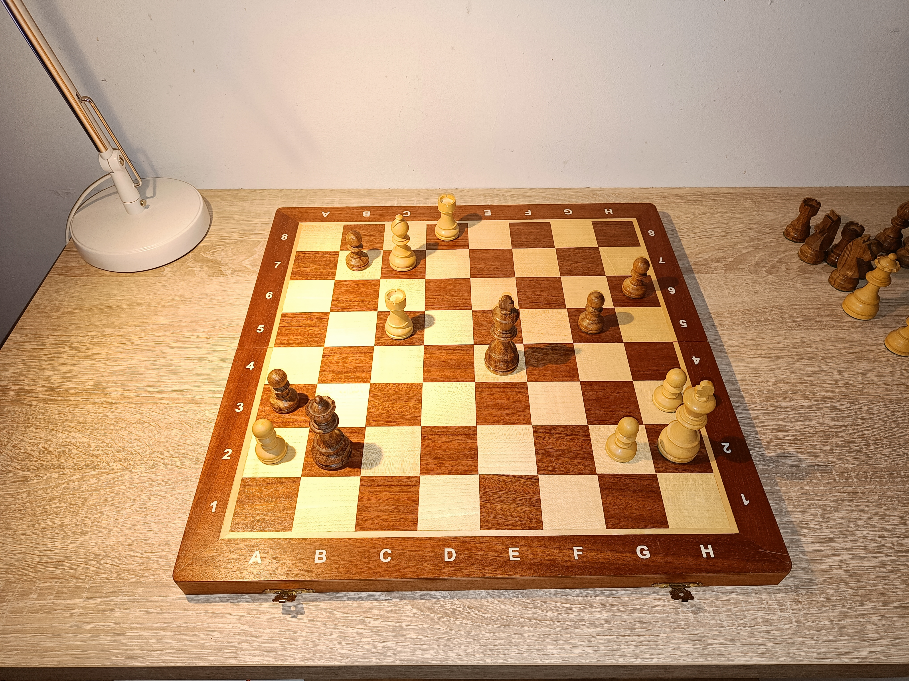

Daniil Dubov

A position from the "Immortal" game between Daniil Dubov and Sergey Karjakin.
Daniil Dubov is one of my favorite chess players. I like his creative approach to chess. His games often contain interesting ideas and unexpected moves. He is a opening specialist and has contributed to the development of several opening lines. That's why Magnus Carlsen, strongest player in the history of the game, invited Dubov to be his second two times in the World Chess Championship matches.
I enjoy watching Dubov's games because his style makes chess exciting and unpredictable.
Why I Like Chess
Chess is a game of strategy, patience and creativity. Every move can change the whole position on the board. That is what makes chess interesting to me.